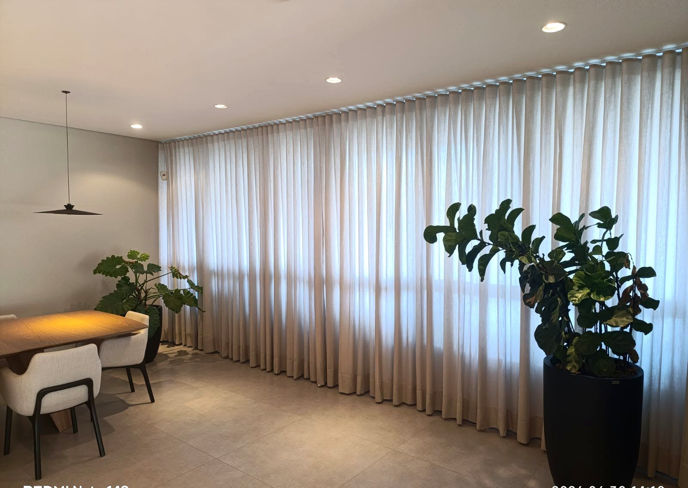
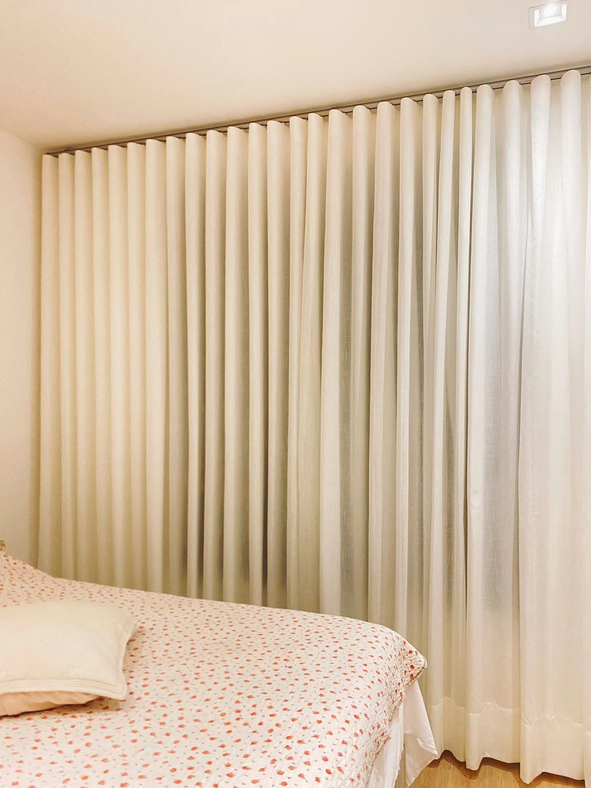
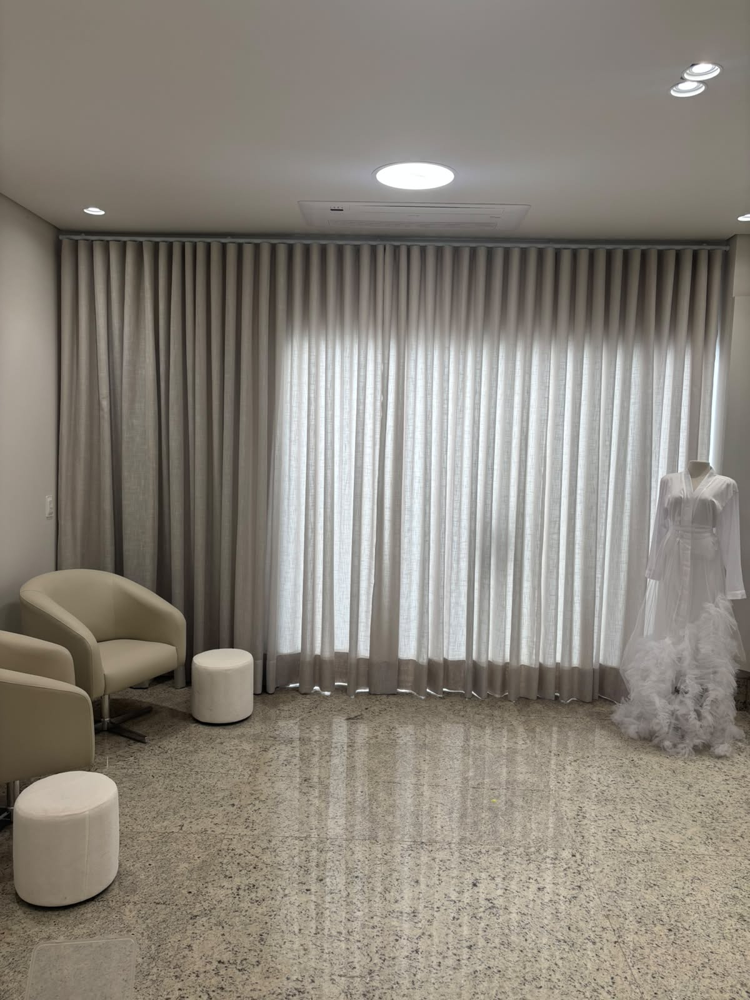
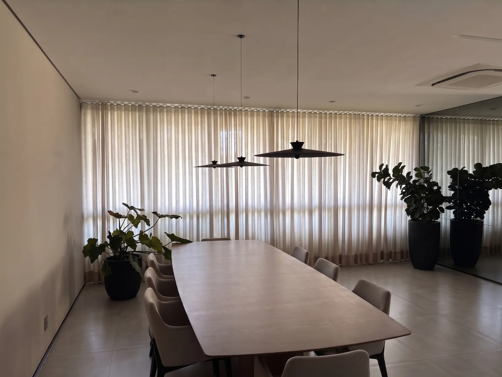
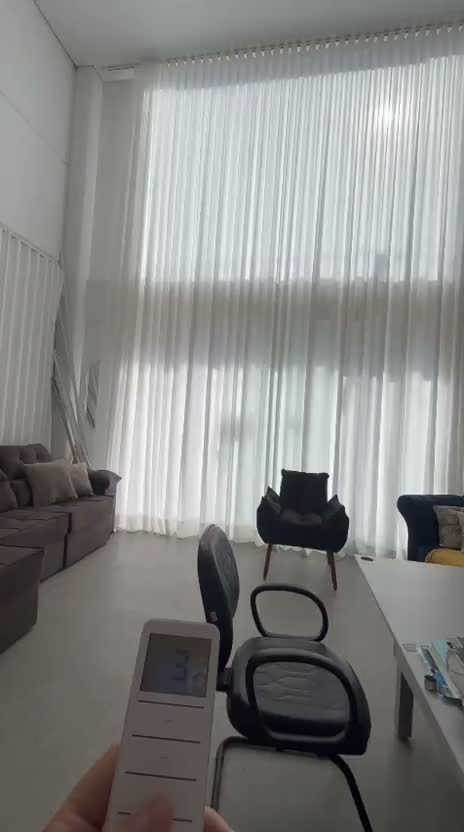

Um olhar Catalan para o seu espaço.Agendar uma visita
O jeito CatalanVestir uma janela.
Vestir uma janela.
Mudar a forma
de sentir a casa.

A luz de cada manhã. A privacidade no fim do dia. A textura que dá vontade de tocar. Escolhemos cada detalhe com você, respeitando o seu espaço e o seu jeito de viver.
Conheça nosso cuidadoAmbientes CatalanFeito para
Feito para
pertencer.
Casas diferentes.
O mesmo cuidado em cada encontro
entre tecido, luz e arquitetura.
Um tempo mais seu.
Quarto · CortinasNa medida da arquitetura.
Pé-direito duplo · CortinasA luz também senta à mesa.
Área gourmet · Persianas romanas
Um projeto Catalan
A luz entra com suavidade.
A luz entra com suavidade.
O caimento faz o resto.
Linhas contínuas e transparência delicada deixam a luz natural participar do ambiente.
Imagine essa composição no seu espaçoMateriais, formas e possibilidadesCada espaço pede
Cada espaço pede
um novo olhar.
 O movimento do tecido, a suavidade da luz.
O movimento do tecido, a suavidade da luz.Texturas que
acolhem.
Tecidos, pregas e acabamentos escolhidos para acompanhar a arquitetura. Da transparência delicada a composições com mais privacidade, tudo começa no seu ambiente.
Caimento sob medida. Atenção a cada acabamento.
O mesmo espaço, outro sentirVeja o que
Veja o que
uma cortina muda.

Alterne entre os dois registros para observar o caimento, a luz e a relação com o ambiente.

Luz em movimentoO ritmo da casa,
O ritmo da casa,
nas suas mãos.
Explore a abertura da cortina.
Um pequeno gesto, outra atmosfera.
FechadaAberta
Automação em um ambiente Catalan.
Do primeiro olhar ao último detalheA sua casa
A sua casa
merece tempo
e atenção.
Você traz o que imagina. Nós ajudamos a encontrar a proporção, o tecido e o acabamento que fazem sentido para o seu espaço.
Agendar uma visita- 01
Uma boa conversa.
Entendemos sua rotina, o ambiente e o que você espera da luz e da privacidade.
- 02
Escolhas no seu espaço.
Na visita técnica, observamos a incidência de luz, conferimos medidas e apresentamos tecidos e acabamentos.
- 03
Cuidado até a instalação.
Com a composição definida, acompanhamos os detalhes para que tudo encontre o seu lugar.
Na voz de quem já escolheuO cuidado fica.
29 avaliações no GoogleO cuidado fica.
A confiança também.
★★★★★
“Impecável! Desde o atendimento a entrega das cortinas! Ficaram maravilhosas! Excelente qualidade, serviço e produto!”
★★★★★
“Atendimento com excelência, pontualidade, cordialidade e honestidade.”
★★★★★
“Gostei muito do atendimento, que foi rápido e muito eficiente! A persiana rolô screen instalada na área de serviço ficou ótima!!”
Nota e quantidade consultadas em 20/09/2026.Ler todas as avaliações no Google
Antes de começarPodemos
Podemos
ajudar.
Como funciona o orçamento?
Começamos com uma conversa sobre o ambiente. Na visita técnica, verificamos as medidas, a luz e as opções de tecidos e acabamentos para preparar uma proposta sob medida.
Posso automatizar minhas cortinas?
Há opções de automação para diferentes modelos. A equipe avalia o tamanho do vão, o sistema escolhido e a compatibilidade com os controles da sua casa.
Qual é o prazo de instalação?
O prazo depende dos materiais e do projeto. A previsão é confirmada no orçamento, antes da aprovação.
Vocês atendem fora de Londrina?
A Catalan fica em Londrina e atende a região. Conte à equipe onde está o seu projeto para consultar a disponibilidade de visita e instalação.
Conte o que você imagina para o seu espaço.
A gente começa a desenhar as possibilidades.